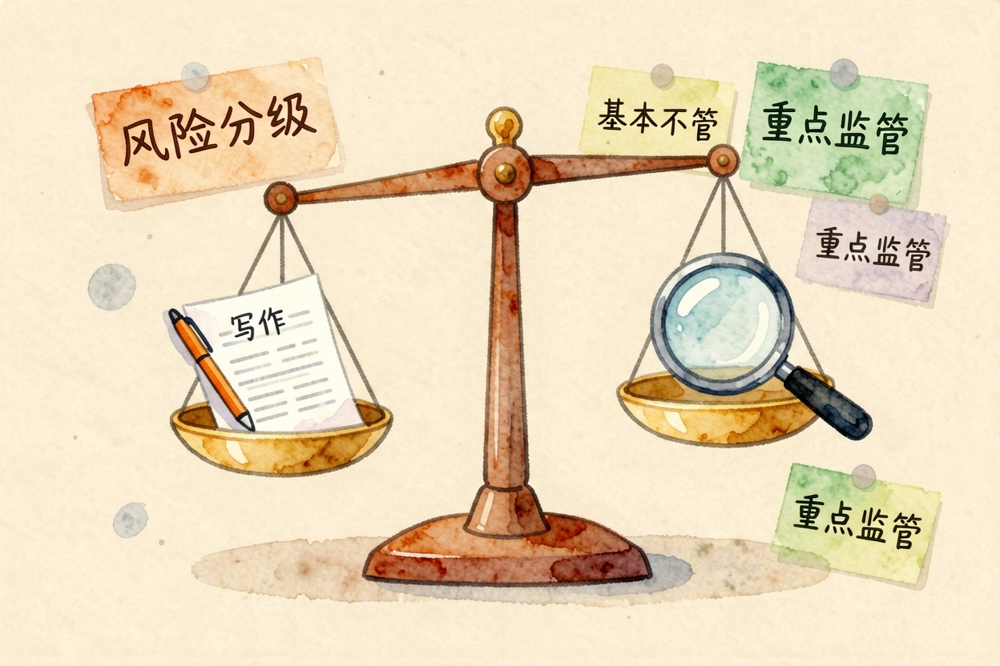
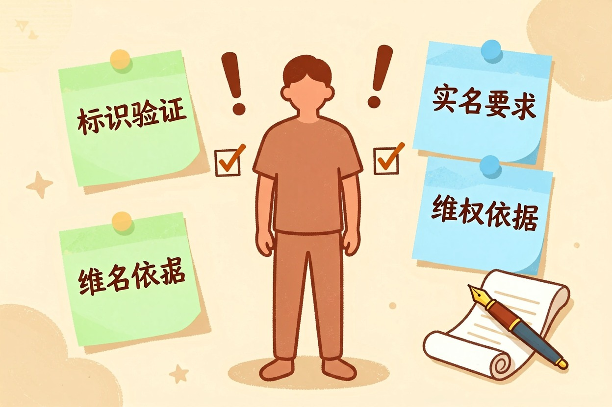
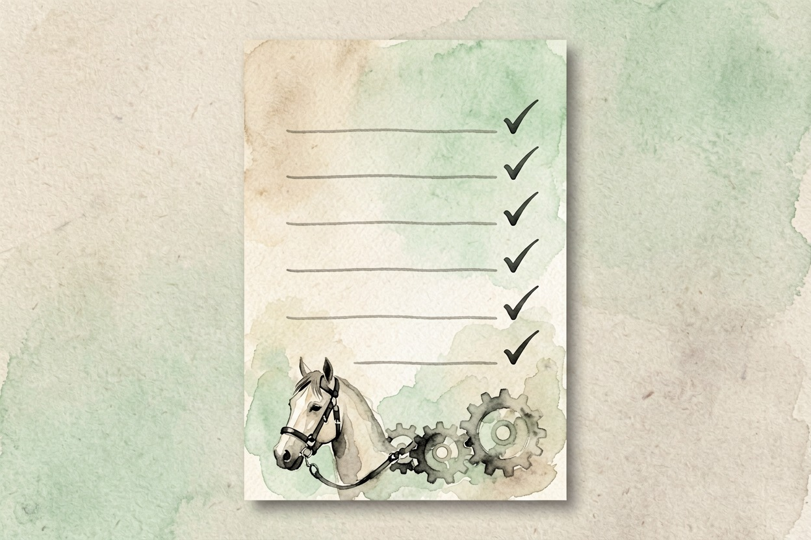

AI 监管是什么：给狂奔的 AI 模型套上那道缰绳 — Learntide
模型跑得比规则快，落下的空白总得有人来补，监管就是那个补位的角色，也是普通人的兜底。
ai监管是什么：给能力划一条边界

ai监管是什么？简单说，就是监管方给人工智能的开发和使用定规则：哪些场景要报备、生成内容怎么标、出了损害谁担责。它约束的是应用方式，技术研究本身通常不在其中。
规则一般按风险分级。写个段子、翻篇文章，基本没人管。用在招聘、信贷、医疗上，要求就严得多。影响越大的用法，要过的关卡越多。这套思路和 AI 对齐是什么 讲的技术手段互为补充，一个靠制度，一个靠模型自身。
监管具体在管哪几件事
大方向上有四块。
- 透明与标识。AI 生成的图文音视频要能被识别出来，别让人误以为是真人真事。落地细节见 ai生成内容标识。
- 高风险准入。涉及人身、财产、基本权利的系统，上线前要评估、要留档。
- 数据与隐私。训练语料从哪来、有没有授权、用户数据能不能拿去训练。
- 责任归属。模型出错造成损失，开发方、部署方、使用方各担多少。
四块里，普通人感受最直接的是第一块。
基本不管：个人写文案、做翻译、生成表情包
重点监管：招聘筛选、信贷评估、医疗建议、司法辅助
明确禁止：伪造他人身份、无差别抓取人脸、诈骗类应用为什么各国都在赶进度
因为模型跨境流动，一地管不住就会外溢。境外训练出来的模型，第二天境内用户就能用上。
各地思路不完全一样，但都绕不开两个关键词：可追溯、防滥用。可追溯是让内容查得到来源，防滥用是把高危场景先框起来。
还有一层更现实的原因。伪造技术的门槛掉得太快，几十秒音频就够克隆一个人的声线。具体防范办法，ai换脸诈骗怎么防 讲得比较细。
监管节奏和技术节奏对不上，也是现实难题。一部法规从起草到落地要一两年，模型半年就换一代。所以多数地方采取分层办法：底线条款先立住，细则边跑边补。
对普通用户意味着什么

短期是多几步麻烦。看到标识、遇到验证、部分功能要实名。
长期是多一层兜底。合成内容带标记，维权就有依据。平台有备案和留痕义务，出了事才找得到人。
对内容创作者还有一层影响。用 AI 产出的商业稿件，越来越多平台要求主动声明来源。提前养成标注习惯，比事后补救省事得多。
企业用户要留意的更多。采购 AI 服务时，合同里最好写清数据用途、是否用于训练、出事怎么划责。这几条谈不下来，风险其实落在你这边。
别把监管想成一堵墙
监管的目标并非让技术停下来，而是别让它在没有刹车的情况下加速。各地规则大多留了试验空间，也是这个道理。
作为用户，你能做的事其实不少。看到疑似伪造的内容先存证，遇到没标识的商业推广可以举报，涉及个人信息的授权弹窗别一路点同意。
规则还在变，具体条款以官方最新发布为准。方向倒是清楚：谁受益、谁负责。看懂 ai监管是什么，你就知道哪些权利本来就在你手上，别轻易让出去。

本文信息核对于 2026-08-08。AI 产品的价格、免费额度与功能变动频繁，实际以各工具官网当前说明为准。